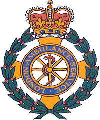

London Ambulance Service
Γιώργος Καρανικόλας - Δημήτρης Τζήκας - Χάρης Ψαρράς
Αλεξάνδρειο ΤΕΙ Θεσσαλονίκης – Πληροφοριακά Συστήματα 1 – 2η Παρουσίαση
Περιεχόμενα
- Τι είναι;
- Η δομή της LAS
- Computer Aided Despatch
- CAD συστήματα
- Χειροκίνητο σύστημα
- Η ελλείψεις του
- Πλεονεκτήματα CAD
- Καθορισμός απαιτήσεων
- Επιλογή προμηθευτή
- Project Management
- Δόκιμες της εφαρμογής
- 26 Οκτωβρίου 1992
- Σημαντικά περιστατικά
- Παρόν και μέλλον
Τι είναι;
Η υπηρεσία ασθενοφόρου του Λονδίνου (LAS) είναι μια εθνική υπηρεσία υγείας που είναι υπεύθυνη για την απάντηση σε ιατρικές καταστάσεις έκτακτης ανάγκης στο Λονδίνο . Ανταποκρίνεται στις κλήσεις προς τηλεφωνήματα 111 και 999, παρέχοντας συμβουλές και βοηθώντας εκείνους που την χρειάζονται όσο το δυνατόν γρηγορότερα.
Η δομή
- Καλύπτει περιοχή 1.600 km2
- Μεταφέρει πάνω από 5.000 ασθενείς ανά μέρα
- Λαμβάνει 2.000-2.500 κλήσεις ανά μέρα με 1.500 επείγουσες
- Απασχολεί 5.000 άτομα για προσωπικό σε 70 σταθμούς
- Παρέχει υπηρεσίες σε 7-10 εκατομμύρια ανθρώπους
- Έχει πάνω από 700 ασθενοφόρα
Computer Aided Despatch (CAD)
Το LAS στις 26 Οκτωβρίου 1992 εισήγαγε ένα νέο σύστημα, Computer Aided Despatch (CAD).
Στόχοι:
- Βελτίωση αποδοτικότητας
- Αποτελεσματικότερος έλεγχος πόρων
- Μείωση προσωπικού
CAD συστήματα
Παρέχουν:
- Διαχείριση και απάντηση των κλήσεων
- Ταυτοποίηση των πόρων
- Κινητοποίηση των πόρων
Αποτελούνται από:
- CAD software και hardware
- Λογισμικό χαρτογράφησης
- Διεπαφή επικοινωνιών (RIFS)
- Κινητά δεδομένων (MDTs)
- Αυτόματο σύστημα εντοπισμού οχημάτων (AVLS)
Χειροκίνητο σύστημα
Απάντηση κλήσεων:
- Συμπλήρωση των λεπτομερειών κλήσης σε ήδη εκτυπωμένη φόρμα.
- Αναγνώριση τοποθεσίας συμβάντος σε πραγματικό χάρτη.
- Μεταφορά φόρμας με ιμάντα σε κεντρικό σημείο συλλογής.
Ταυτοποίηση πόρων:
- Συλλογή φόρμας από το σημείο συγκέντρωσης, αναγνώριση διπλότυπων.
- Μεταφορά φόρμας στον εκχωρητή πόρων (resource allocator), ανάλογα με την περιοχή(ΒΑ,ΒΔ,Ν).
- Ο resource allocator αποφασίζει ποιο όχημα θα κινητοποιηθεί κάθε φορά.
- Καταγράφεται στην φόρμα και περνάει στον dispatcher.
Κινητοποίηση πόρων:
- Ο dispatcher καλεί τον αντίστοιχο σταθμό των ασθενοφόρων.
- Αν το ασθενοφόρο βρίσκεται σε κίνηση, δίνει τις οδηγίες κινητοποίησης στον χειριστή ασυρμάτου.
- Όλη η διαδικασία δεν πρέπει να διαρκεί πάνω από 3’.
Η ελλείψεις του
- Χρονοβόρος εντοπισμός ακριβής τοποθεσίας.
- Η κίνηση των φορμών στην αίθουσα ελέγχου δεν είναι αποδοτική.
- Η διατήρηση της τοποθεσίας και κατάστασης των ασθενοφόρων από πληροφορίες των χειριστών ασυρμάτου είναι αναποτελεσματική.
- Η επικοινωνία με τα ασθενοφόρα μέσω φωνής είναι αργή.
- Ο εντοπισμός διπλότυπων κλήσεων βασίζεται στην ανθρώπινη μνήμη.
- Η αναγνώριση σοβαρών περιστατικών βασίζεται στην ανθρώπινη κρίση.
Πλεονεκτήματα CAD
- Εντοπισμός τοποθεσίας μέσω υπολογιστή.
- Εξάλειψη της ανάγκης κίνησης της φόρμας στο κέντρο ελέγχου.
- Αυτοματοποιημένη ενημέρωση των πληροφοριών τοποθεσίας και διαθεσιμότητας πόρων.
- Τεχνητή νοημοσύνη για τον εντοπισμό διπλότυπων κλήσεων και σοβαρών περιστατικών.
- Άμεση κινητοποίηση του ασθενοφόρου ακόμη και πριν την ολοκλήρωση της κλήσης ( μέχρι και μέσα σε 1 λεπτό).
Καθορισμός απαιτήσεων συστήματος
- 100% ακρίβεια στην λειτουργιά του.
- Η αποδοτικότητα του συστήματος πολύ σημαντική.
- Να μπορεί να αντιμετωπίζει ημιτελή δεδομένα.
- Ζωτικής σημασίας η αποστολή των πληροφοριών.
- Εύκολο στην προσβασιμότητα και την χρήση του.
Επιλογή προμηθευτή
- Ανοιχτός διαγωνισμός (7 Φεβρουαρίου του 1991)
- Συμμετείχαν 35 εταιρίες.
- Επιλέχθηκε η χαμηλότερη πρόσφορα από όλες.
- Η 17 από τους 35 προμηθευτές παρείχαν πλήρεις προτάσεις.
- Μόνο μια πρόταση ικανοποιούσε τις συνολικές απαιτήσεις του LAS.
- Κοινοπραξία των Apricot, System Options (£ 35k), Datatrak.
- Η προσφορά: £937.000, επόμενες χαμηλότερες ήταν £1.6 και £3 εκατομμύρια.
Project Management
- Υπήρχε μεγάλος κίνδυνος της διοίκησης να δώσει το έργο σε μικρή εταιρεία λογισμικού με μικρή εμπειρία σε συστήματα υψηλής ακεραιότητας (high integrity).
- Η κλίμακα και η ταχύτητα των αλλαγών ήταν πολύ επιθετικές.
- Κακή καθορισμένη δομή διαχείρισης.
- Υποτίθεται ότι η SO ήταν υπεύθυνη, τελικά ανέλαβε το LAS.
- Δεν υπήρχε επίσημη, ανεξάρτητη Διασφάλιση Ποιότητας (QA) σε κανένα στάδιο της ανάπτυξης του συστήματος CAD.
Δοκιμές της εφαρμογής
- Δεν τηρήθηκε η αρχική προθεσμία της εφαρμογής όπου ήταν 08-01-1992.
- Χρησιμοποίησαν μόνο το πρόγραμμα για απάντηση κλήσεων.
- 2η φάση: χρησιμοποιήθηκε και το πρόγραμμα ταυτοποίησης πόρων.
- Χωρίς ακριβείς πληροφορίες των οχημάτων, δεν μπορούσε να διαθέσει τους βέλτιστους πόρους.
- Όλα τα προβλήματα ποιότητας έπρεπε να καταγράφονται μέσω Project Issue Report (PIR) forms.
- Μέχρι τις 26 Οκτώβριου: Έγιναν 1.513 PIRs, με 81 εκκρεμή.
26 Οκτώβριου 1992
- Μετά από μια ολόκληρη σειρά ζητημάτων, συμπεριλαμβανομένης της ακύρωσης και επανασχεδιασμού του έργου, αναπτύχθηκε ένα σύστημα λογισμικού που αναπτύχθηκε το πρωί της 26ης Οκτωβρίου 1992 .
- Λίγες ώρες αργότερα, όμως, άρχισαν να δημιουργούνται προβλήματα. Το AVLS δεν μπόρεσε να παρακολουθήσει τα ασθενοφόρα και τις καταστάσεις τους στο σύστημα.
- Ξεκίνησε την αποστολή πολλαπλών οχημάτων σε ορισμένες τοποθεσίες και άφησε χωρίς ασθενοφόρα άλλες τοποθεσίες.
- Η αποδοτικότητα με την οποία εκχωρούσε τοποθεσίες για να καλέσει οχήματα ήταν υποβαθμισμένη.
- Το σύστημα άρχισε να παράγει μια τόσο μεγάλη ποσότητα μηνυμάτων εξαίρεσης στα τερματικά των αποστολέων που οι κλήσεις χάθηκαν.
- Το πρόβλημα επιδεινώθηκε όταν οι άνθρωποι επέστρεφαν τις κλήσεις επιπλέον φορές επειδή τα ασθενοφόρα που περίμεναν δεν έφτασαν.
- Καθώς όλο και περισσότερα περιστατικά εισήχθησαν στο σύστημα, έγιναν όλο και πιο φραγμένα.
- Την επόμενη μέρα, το LAS επανήλθε σε σύστημα χειρός και έκλεισε το σύστημα υπολογιστή εντελώς όταν παρέλειψε να εργάζεται εντελώς οκτώ ημέρες αργότερα.
Άμεσες αίτιες
- Την εποχή που κυκλοφόρησε το σύστημα, υπήρχαν 81 γνωστά προβλήματα με το λογισμικό και δεν εκτελέστηκαν δοκιμές φορτίου.
- Δεν υπήρχαν διατάξεις για ένα εφεδρικό σύστημα.
- Ενώ το χάσμα των 10 μηνών μεταξύ των χρονικών αποστολείς ήταν αρχικά εκπαιδευμένο να χρησιμοποιήσει το λογισμικό και όταν αναπτύχθηκε έπαιξε το ρόλο του στην καταστροφή, το λογισμικό είχε τρία κύρια ελαττώματα που προκάλεσε αμέσως την αποτυχία:
Ατελείωτα δεδομένα
Το λογισμικό σύστημα δεν λειτούργησε καλά όταν έλαβε μη έγκυρα ή ελλιπή δεδομένα σχετικά με τις θέσεις και τις καταστάσεις των ασθενοφόρων.
Θέματα διασύνδεσης
Το αναπτυγμένο σύστημα είχε μια ευρεία ποικιλία ιδιορρυθμιών σε διαφορετικά μέρη του περιβάλλοντος χρήστη. Για παράδειγμα, τμήματα των τερματικών οθονών MDT είχαν μαύρες κηλίδες, εμποδίζοντας έτσι τους χειριστές ασθενοφόρων να πάρουν όλες τις απαραίτητες πληροφορίες.
Όταν τα πληρώματα των ασθενοφόρων επιχείρησαν να διορθώσουν τα λάθη μετά την ώθηση σε λανθασμένα λάθος κουμπιά, το σύστημα δεν δέχτηκε την επιδιόρθωση. Και πάλι, το λογισμικό απέτυχε να αντισταθμίσει τις συνθήκες σφάλματος που συμβαίνουν κατά την κανονική καθημερινή λειτουργία.
Διαρροή μνήμης
Η βασική αιτία της κύριας βλάβης του συστήματος, ωστόσο, ήταν μια διαρροή μνήμης σε ένα μικρό τμήμα του κώδικα. Αυτό το ελάττωμα διατηρούσε στη μνήμη που κρατούσε πληροφορίες του περιστατικού στο διακομιστή αρχείων, ακόμα και όταν δεν χρειαζόταν πια. Όπως με κάθε διαρροή μνήμης, μετά από αρκετό χρόνο, η μνήμη γεμίστηκε και προκάλεσε την αποτυχία του συστήματος.
Από τεχνική άποψη
- Από τεχνική άποψη το σύστημα δεν απέτυχε στις 26-27 Οκτώβριου επειδή μετά τις 27 Οκτώβριου επανήλθαν σε ημιαυτόματη μέθοδο λειτουργιάς.
- Αυτό το σύστημα λειτούργησε ικανοποιητικά μέχρι τις πρώτες πρωινές ώρες της 4 Νοέμβριου 1992.
- Μετά τις 14:00 το σύστημα επιβραδύνθηκε σημαντικά και λίγο αργότερα όλο το σύστημα κλειδώθηκε.
- Έγιναν προσπάθειες επανεκκίνησης αλλά χωρίς αποτελέσματα.
- Διεύθυνση και προσωπικό αποφάσισαν να επανέλθουν σε πλήρως χειροκίνητη λειτουργιά.
Ισχυρισμοί για θανάτους
Υπήρξε μεγάλη δημοσιότητα ότι η αποτυχία του συστήματος μπορεί να οδήγησε μέχρι και σε 46 θανάτους. Αλλά οι 26 περιπτώσεις που εξεταστήκαν από τα δικαστήρια, σε καμία από αυτές το LAS δεν μπορεί να κατηγορηθεί για τον θάνατο ασθενούς
Σημαντικά γεγονότα
Το LAS διαδραματίζει σημαντικό ρόλο κάθε φορά που ένα περιστατικό προκαλεί μαζικές απώλειες στο Λονδίνο. Τα παραδείγματα περιλαμβάνουν:
- Πυρκαγιά του Πύργου Grenfell και Κένσινγκτον, προκαλώντας τουλάχιστον 80 θανάτους και πάνω από 70 τραυματισμούς.
- Επιθέσεις αυτοκτονίας: Τέσσερις βομβιστικές επιθέσεις αυτοκτονίας στο Λονδίνο.
- Συντριβή αμαξοστοιχίας Paddington: Δυο τρένα συγκρούστηκαν σε μικρή απόσταση έξω από το σταθμό Paddington, σκοτώνοντας 31 άτομα.
- Cannon Street rail crash: Δυο άνθρωποι σκοτώθηκαν και πάνω από 500 τραυματίστηκαν.
Σημαντικά γεγονότα
- Μαστιχοαμερικανική καταστροφή: Ένα σκάφος αναψυχής, Μάρκιονς, βρέθηκε σε σύγκρουση σε βυθοκόρο. 51 άνθρωποι πέθαναν.
- Clapham Junction συντριβή τρένου: 35 άνθρωποι σκοτώθηκαν και 69 τραυματίστηκαν σοβαρά.
- King’s Cross πυρκαγιά: 31 άνθρωποι πέθαναν σε μια μεγάλη πυρκαγιά στο σταθμό του υπόγειου σιδηρόδρομου.
- Moorgate συντριβή σωλήνα: ο οδηγός και 42 επιβάτες σκοτώθηκαν.
- Προσωρινή εκστρατεία βομβαρδισμού του IRA: πολλές βομβαρδιστικές επιθέσεις στους οποίους απαντήθηκε το LAS.
- Επίθεση στο Westminster.

Παρόν και μέλλον
- Τον Απρίλιο του 1995 αναπτύχτηκε το CTAK και τον Φεβρουάριο του 1996 τέθηκε σε εφαρμογή.
- 8 Ιουνίου 2011: CommandPoint by Northrob Grumman ( £18.000.000 ).
- Αλλά υπήρξαν τεχνικά προβλήματα και αποφασίστηκε η επαναφορά του CTAK.
- Καθυστερήσεις μέχρι 50’.
- Το LAS προτίθεται να το επαναφέρει στις αρχές του 2012.
ΕΔΩ ΤΕΛΕΙΩΝΕΙ Η ΠΑΡΟΥΣΙΑΣΗ ΜΑΣ
ΕΥΧΑΡΙΣΤΟΥΜΕ ΓΙΑ ΤΗΝ ΠΑΡΑΚΟΥΛΟΥΘΗΣΗ ΣΑΣ